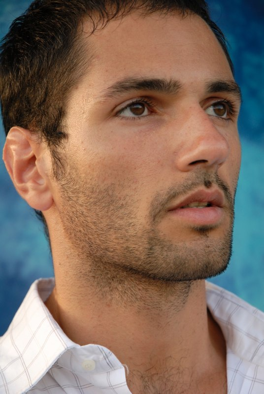

I SERVIZI DI ABRUZZO FOTO
BOOK & RITRATTI
Una persona, tanti modi di raccontarla.



La personalità al centro dell’immagine
Un ritratto può fermare un’espressione, un gesto o un dettaglio. Questa raccolta mostra alcuni esempi dai book di Abruzzo Foto, con pose, inquadrature e atmosfere differenti.
Parliamo del tuo book
Raccontaci a cosa serviranno le fotografie e il risultato che vorresti ottenere. Possiamo confrontarci sul contesto e sulle immagini di riferimento, prima di definire disponibilità e preventivo.
RACCONTACI LA TUA IDEA